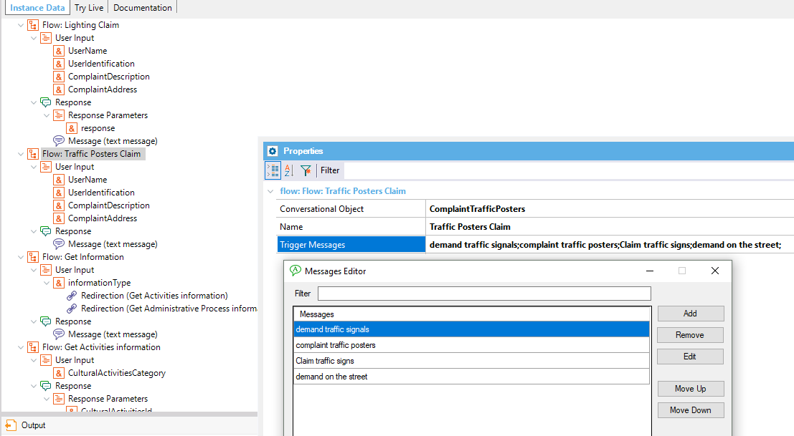
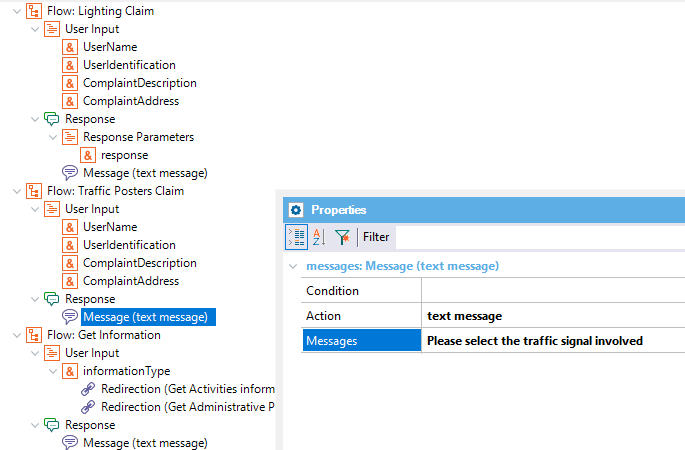
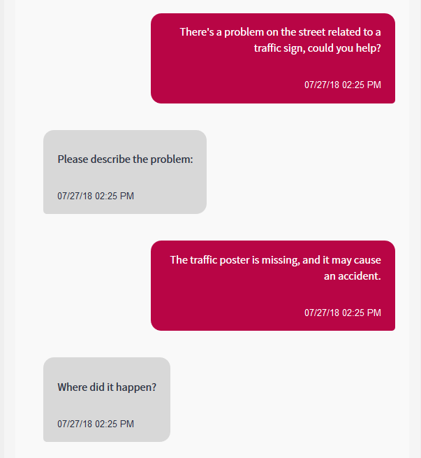
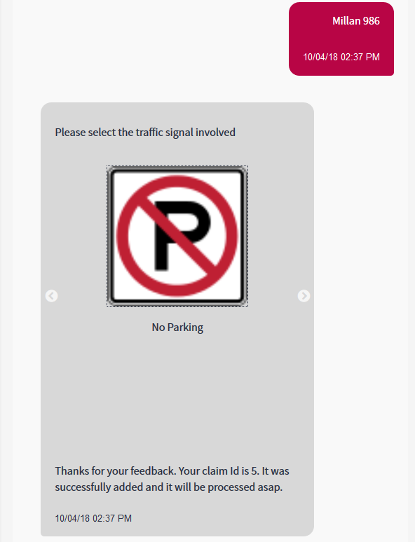

Learn how to define a Flow in order to model making a request or complaint about any issue happening on the street. There are three types of requests:
In this solution, the user enters any utterance that the AI engine detects as any of the possibilities above, so each of them is considered to be a different intent. Making a complaint about a lighting issueHere you will see some of the intents, starting with "Making a complaint about a Lighting issue." In this case the Conversational Object property is a procedure that inserts the complaint in the database. See the detailed explanation of this case here. Making a complaint about Traffic SignsIn this example, the Conversational Object property is set to a web panel that shows the traffic signs so the user can choose between any of them and make the complaint. The flow would be as follows:  Note that you define a Response Message (text) that says: "Please select the traffic signal". This message is displayed at the same time of the web panel load, so the user can understand the purpose of the web panel displayed on the screen.  At runtime, it looks like this:  
|
| Backlinks | |
| Chatbot Flow: Set up an appointment for any administrative formality | Toc:Chatbots in GeneXus |